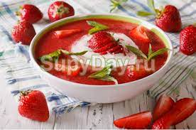

традиційній польській кухні знайдеться багато екзотичних для іноземця складників. У жаркі літні дні готовлять холодні супи з полуниці, черешні, яблук і груш, навіть з лісових ягід.Восени популярні супи з огірків і грибів. У сільських областях дотепер існують і традиційні страви з круп (krupniki), до яких додають смажену свинину, солонину або м'ясо птаха.

Ідеальним після тривалого вчорашнього застілля вважають жур (żurek), який ще так і називають - «суп учорашнього дня». Журек досконало допомагає відновити роботу шлунково-кишкового тракту. А скільки регіонів у Польщі – стільки і журків! Основним компонентом завжди є закваска з житньої муки, із скориночкою житнього хліба. Пісний журек завжди вважався супом скоромним, а коли пісні дні минали, кухар присмачував журек найрізноманітнішими смакотами з комори: додавалася нарізана дрібними скибочками ковбаса, копчена корейка, підсмажені шматочки грудинки, половинки звареного круто яйця.
До одних перших страв у Польщі прийнято подавати замість хліба картоплю, до інших - галушки, пиріжки, каші, грінки і т.д. Так, к журку подають картоплю, политу розтопленим свинячим жиром, до грибного супу - перлову кашу.
Регіональні блюда краще всього куштувати на їх батьківщині. Тому в Познані варто замовити “пири з ґзіком”, в Ополю – галушки шльонскі з синьою капустою, в Щавниці – квасницю (густий капусняк), в Криниці – смажені рижики просто з жерстяної жаровні.
На головну сторінку